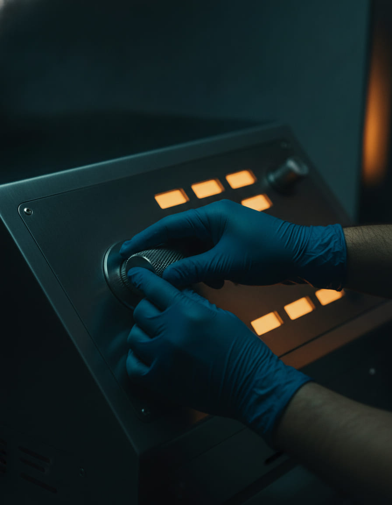
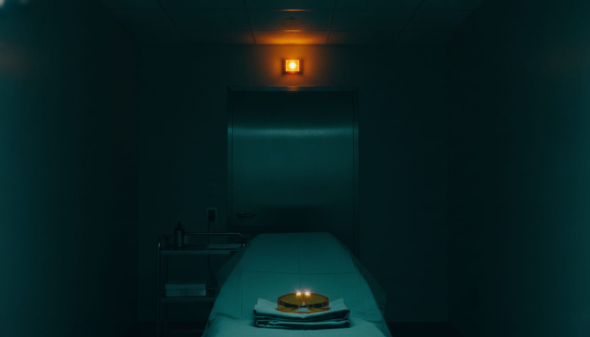
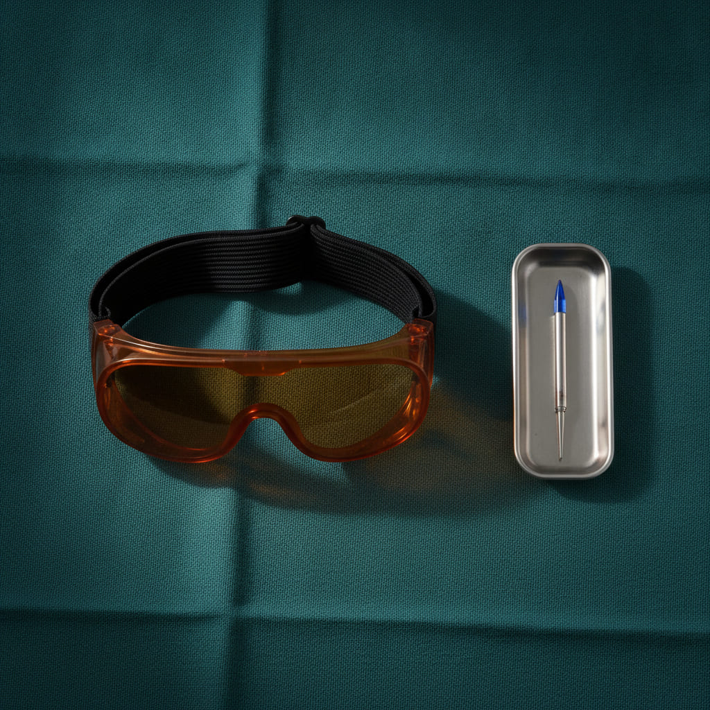
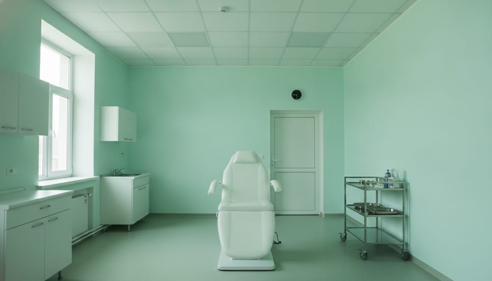
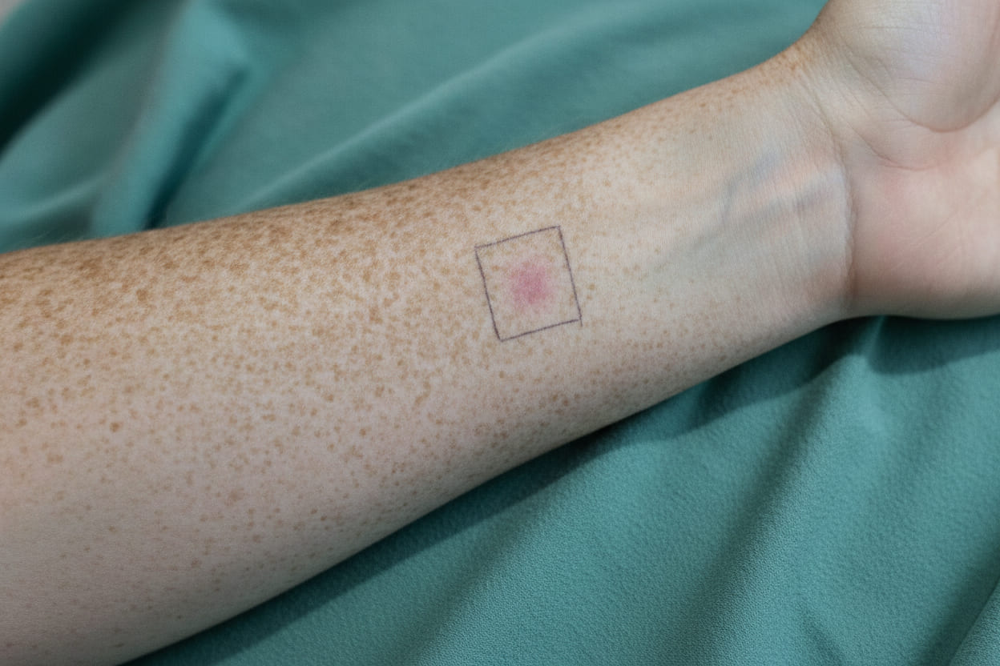

Laser hair removal, sun damage and resurfacing — with a doctor in the room.
FLUENCE is a laser medicine practice on 2180 South. We treat unwanted hair, sun spots, facial veins and pigment with medical lasers — and we read a test spot on your own skin 48 hours before we treat you.
- Physician on site for every laser session
- Test spot read at 48 hours, every time
- Nd:YAG, alexandrite and fractional CO2
- Street parking on 2100 South · Suite 210
What we treat, and with which wavelength.
All of it happens in Room 2 with Dr. Halvorsen present. If a laser is not the right answer for what you have, you will hear that at the consult rather than after you have paid for a package.
-
Laser hair removal
Alexandrite at 755 nm for fair skin, Nd:YAG at 1064 nm for darker. Six to eight sessions, six weeks apart, because hair only answers in its growth phase.
755 / 1064 nm · 22–90 min $120 small · $340 large -
Sun damage and brown spots
An IPL photofacial for the freckling and mottling that years of outdoor sun leave behind. Most faces take three sessions, a month apart.
IPL 560 nm filter · 40 min $395 -
Facial veins and redness
A long-pulse 1064 nm closes the small vessels around the nose and cheeks. Usually one session, sometimes two.
1064 nm long pulse · 30 min $275 -
Melasma and pigment
Q-switched at deliberately conservative settings, because pigment punished with too much energy comes back darker than it started.
532 / 1064 nm Q-switched · 25 min $310 -
Fractional CO2 resurfacing
Ablative, at 10,600 nm, for texture and deeper lines. Five to seven days of genuine recovery, and we will not pretend otherwise to get it booked.
10,600 nm · 90 min $2,400
At 4,226 feet, the sun here is not the sun you grew up with.
40.8 Utah
22.5 United States
Ultraviolet exposure climbs roughly 3 to 4 percent for every thousand feet you gain, and this valley starts at 4,226 of them — with a population that is largely fair-skinned and outdoors all year. The accumulated damage we see does not look like the damage at sea level, and it is most of what walks through the door.
The room is dark because the room should be dark.
- ROOM 2 Class 4 · door interlocked
- EYEWEAR OD-rated, one pair per person
- LIGHT overheads down, panel only
LASER ARMED
Ambient light competes with reading skin. With the overheads down we can see what the tissue is actually doing between pulses — which is the only reason to look at it at all. It is a working condition, not a mood.
The amber lamp over the door is an interlock, wired to the emission: if the door opens while the laser is armed, the system stops. Everyone who comes into this room wears goggles rated for the wavelength we are running. That includes you, and it includes us.
Every setting on this page is a number we can show you.
A laser does not have “programs.” It has a wavelength, an energy density, a pulse width, a spot size and a cooling delay. Those five numbers are the treatment. If a clinic will not tell you what they set, there is a reason.
- Device Nd:YAG + ALEX One dual-wavelength platform, plus a fractional CO2 for resurfacing.
- Wavelength 1064 / 755 nm 532 nm Q-switched · 10,600 nm CO2
- Session 22 min Upper lip. A full face runs to 90 minutes.
- Recovery 0 days Non-ablative. Ablative resurfacing is 5–7 days.
- Supervision MD ON SITE Utah requires a physician on site. We don't treat without one.
- I
- II
- III
- IV
- V
- VI
We'll tell you which of us is doing what.
Utah law is unusually clear about this, and we think it is a feature rather than fine print. A physician has to be physically present while medical aesthetic procedures are performed. Neuromodulators, fillers and ablative laser are theirs alone.


We test a spot on your skin and send you home for 48 hours. Then we treat.
Almost nobody does this, because it costs a second visit and it slows the sale down. It is also the only way to know how your skin answers these numbers before we point the machine at your face.
-
01
Read the skin
Thirty minutes with the lights up. Skin type, sun history, medications, what you actually want changed. No device is switched on.
-
02
Mark and fire
A two-centimeter square on the inner forearm, outlined in surgical marker, treated at the settings we would use on you.
-
03
Go home
Forty-eight hours. Redness that fades, pigment that lifts, anything that blisters — all of it shows up in that window, and none of it shows up in ten minutes.
-
04
Set the numbers
We read the square, adjust fluence and pulse width, and write the settings down. You get a copy. Then we treat.

Printed once, in full, with the unit attached.
No packages you have to buy before anyone has looked at your skin, no countdown, no “from.” If a plan needs more than one session we will say how many at the consult, before you pay for the first.
-
Consult + test spot$75
Credited in full to your first session.
-
Laser hair removal · small area$120
Upper lip, chin, underarm. About 22 minutes in the chair.
-
Laser hair removal · large area$340
Full legs or back. Around 90 minutes.
-
Facial veins and redness$275
Nose and cheeks. Usually one session, sometimes two.
-
Melasma and pigment$310
Q-switched, conservative settings, reviewed between sessions.
-
IPL photofacial · sun damage$395
Full face. Most Fitzpatrick I–III sun damage takes three sessions, spaced a month apart.
-
Fractional CO2 resurfacing · full face$2,400
Ablative. Five to seven days of recovery, and you will want to clear the calendar for them.
The six we are asked most.
Do I really have to come in twice?Q1
For anything with a laser, yes. The consult and the test spot happen on the first visit; treatment starts on the second, at least 48 hours later. It is the difference between treating your skin and treating an average.
Who is actually in the room?Q2
Dr. Marit Halvorsen, MD, our medical director, is present for every laser session. Tessa Nakamura, a licensed master esthetician, runs non-ablative devices under her supervision. Utah requires a physician on site for medical aesthetic procedures, and we don't treat without one.
Does this work on darker skin?Q3
Yes, with the right wavelength. Fitzpatrick IV–VI is treated at 1064 nm with a long pulse — 30 to 60 ms — at 24–32 J/cm² and more aggressive cooling. What is unsafe is running an alexandrite at type-II settings on type-V skin, which is why the test spot exists.
How much downtime?Q4
Non-ablative treatments — hair removal, IPL, vascular work — have none worth the name: an hour or two of warmth and color. Fractional CO2 is a genuine five to seven days, and we will not pretend otherwise to get it booked.
What if you find something that isn't cosmetic?Q5
We tell you, and we refer you to a dermatologist. We do not diagnose and we do not sell you a screening. Cosmetic damage is our work; anything else belongs to someone with a different license.
Why are you closed on Mondays?Q6
Calibration. A Class 4 laser is checked and its output measured before the week starts, and that is not something you do between appointments with the room half booked.
Sugar House, on the east side of 1300 East.
Street parking on 2100 South; the entrance is on the east side of the building, past the planters, and Suite 210 is one floor up with the lift straight ahead of you. An address in this city is a coordinate pair — 2180 South 1300 East is 21.8 blocks south and 13 east of a single zero point downtown — so if you can count blocks you cannot miss us.
- Tue–Fri 9:00 – 18:00
- Sat 9:00 – 14:00
- Sun Closed
- Mon Closed — equipment calibration
40.7250° N · 111.8570° W ELEV 4,226 FT 2180 SOUTH · 1300 EAST